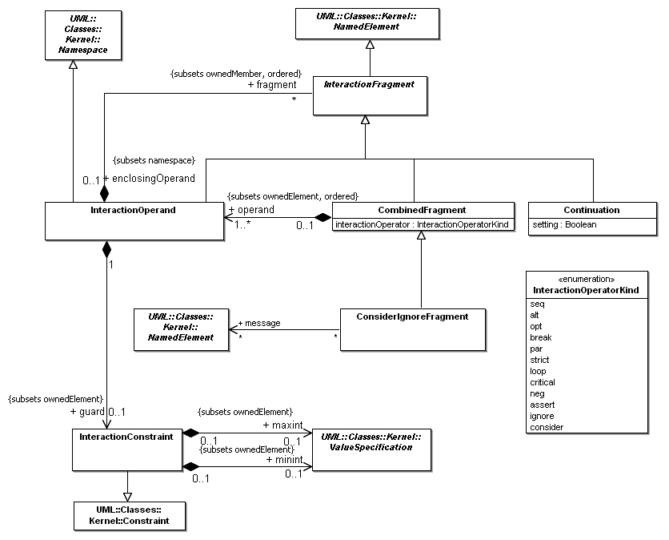
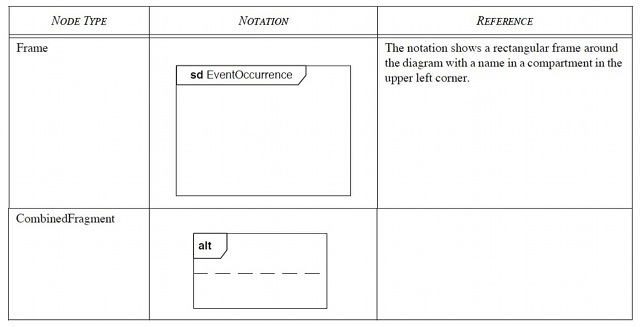

La specifica di UML 2.0 permette di esprimere comportamenti più complessi rispetto a quanto era possibile fare
con UML 1.x, ad esempio è ora possibile rappresentare l'esecuzione atomica di una serie di interazioni,
oppure che un messaggio deve essere inviato solo in determinate condizioni.
A tale scopo UML 2.0 mette a disposizione
gli Interaction Fragment. Inseriti in un Combined Fragment, cioè un contenitore atto a delimitare
l'area d'interesse, essi servono per spiegare che una certa catena di eventi, racchiusa in
uno o più operandi, si verificherà in base alla semantica dell'operatore associato.
Dalla specifica UML SuperStructure (pag. 467) la definizione di
Combined fragment risulta essere la seguente:
A combined fragment defines an expression of interaction fragments. A combined fragment is defined by an interaction
operator and corresponding interaction operands. Through the use of CombinedFragments the user will be able to describe
a number of traces in a compact and concise manner.
CombinedFragment is a specialization of InteractionFragment.
Il meta-modello del Combined fragment è riportato nella figura sottostante.
Figure 1. Meta-modello Combined fragment (tratto da UML SuperStructure pag. 464)

Gli operatori a disposizione sono:
- Loop: specifica che quello che è racchiuso nell'operando sarà eseguito ciclicamente finchè la guardia,
una condizione booleana associata all'operando stesso, sarà verificata;
- Alternatives (alt): indica che sarà eseguito il contenuto di uno solo
degli operandi, quello la cui guardia risulta verificata;
- Optional (opt): indica che l'esecuzione del contenuto dell'operando sarà
eseguita solo se la guardia è verificata;
- Break (break): ha la stessa semantica di opt, con la differenza che in
seguito l'interazione sarà terminata;
- Critical : specifica un Atomic Execution Block;
- Parallel (par): specifica che il contenuto del primo operando può essere
eseguito in parallelo a quello del secondo;
- Weak Sequencing (seq): specifica che il risultato complessivo può essere
una qualsiasi combinazione delle interazioni contenute negli operandi,
purchè: (1) l'ordinamento stabilito in ciascun operando sia mantenuto
nel complesso; (3) eventi che riguardano gli stessi destinatari devono
rispettare anche l'ordine degli operandi, cioè i messaggi del primo operando hanno precedenza su quelli del secondo;
(3) eventi che riguardano
destinatari differenti non hanno vincoli di precedenza vicendevole;
- Strict Sequencing (strict): indica che il contenuto deve essere eseguito
nell'ordine in cui è specificato, anche rispetto agli operandi;
- Ignore: indica che alcuni messaggi, importanti ai fini del funzionamento
del sistema, non sono stati rappresentati, perchè non utili ai fini della
comprensione dell'interazione;
- Consider: è complementare ad ignore;
- Negative (neg): racchiude una sequenza di eventi che non deve mai
verificarsi;
- Assertion (assert): racchiude quella che è considerata l'unica sequenza
di eventi valida. Di solito è associata all'utilizzo di uno State Invariant
come rinforzo.
Rappresentazione dei Combined fragment
Un Combined fragment è rappresentato attraverso un rettangolo (vedi fiura sottostante). L'operatore è inserito in un
pentagono nell'angolo in alto a sinistra. E' possibile inserire inserire più di un operatore nel pentagono. Questo
rappresenta una abbreviazione di rappresentazione per Combined fragment innestati.
Per esempio se inseriamo "loop strict" nel pentagono ha il medesimo significato di due Combined fragment innestati, il più
esterno con operando "loop" e il più interno con operando "strict".
Gli operandi di un combined fragment sono mostrati attraverso l'ausilio di linee tratteggiate per dividere il diagramma
in diverse regioni corrispondenti agli operandi.
Per i dettagli della rappresentazione di ciascun operando si rimanda il lettore alla specifica UML SuperStructure pagg.471 e seguenti.
Figure 2. Notazione dei Combined fragment (tratto da UML SuperStructure pag. 506)
